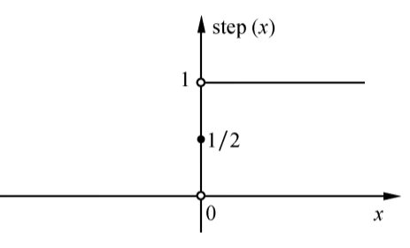
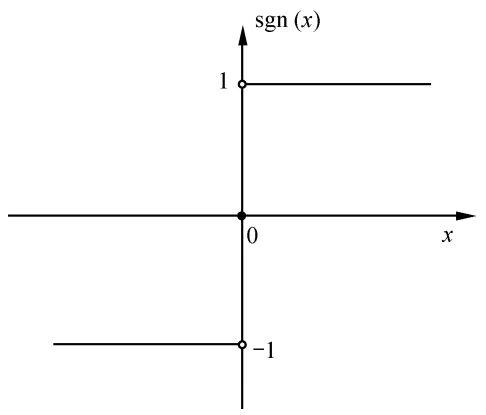
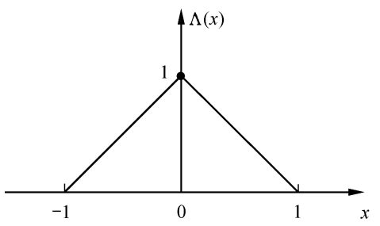
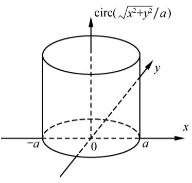

常用函数
阶跃函数
$$\text{step}(x) = \begin{cases}1,\quad x\gt0\\\frac{1}{2},\quad x=0\\0,\quad x\lt 0\end{cases}$$

$$\text{step}(x)f(x) = \begin{cases}f(x),\quad x\gt 0\\0,\quad x\lt 0\end{cases}$$
符号函数
$$\text{sgn}(x) = \begin{cases}1,\quad x\gt0\\0, \quad x=0\\-1,\quad x\lt 0\end{cases}$$
$$\text{sgn}(x) = 2\text{step}(x) - 1$$

矩形函数
$$\text{rect}\left(\frac{x}{a}\right) = \begin{cases}1,\quad |x|\leq \frac{a}{2}\\0,\quad \text{others}\end{cases}$$
三角形函数
$$\text{tri}\left(\frac{x}{z}\right) = \Lambda\left(\frac{x}{a}\right) = \begin{cases}1 - \frac{|x|}{a},\quad |x|\leq a\\0,\quad \text{others}\end{cases}$$
其中\(a\gt 0\)，函数为以原点为底边中心、底边长为\(2a\)、高度为\(1\)的等腰三角形.

圆柱函数
直角坐标系内圆柱函数的定义式为：
$$\text{circ}\left(\frac{\sqrt{x^2 + y^2}}{a}\right) = \begin{cases}1,\quad\sqrt{x^2+y^2}\leq a\\0,\quad\text{others}\end{cases}$$
极坐标内的定义式为：
$$\text{circ}\left(\frac{r}{a}\right) = \begin{cases}1,\quad r\leq a\\0,\quad r\gt a\end{cases}$$

sinc函数
$$\text{sinc}\left(\frac{x-x_0}{a}\right) = \frac{\sin\pi(x-x_0)/a}{\pi(x-x_0)/a}$$
脉冲函数（\(\delta\)函数）
二维空间\(\delta\)函数的一般定义为：
$$\delta(x,y)\neq 0,\quad x\neq 0~or~y\neq 0$$
$$\iint\delta(x,y)\mathrm{d}x\mathrm{d}y = 1$$
定义式表明：除原点外\(\delta\)函数值恒为\(0\)，而在原点附近无限小范围内，函数积分为\(1\).